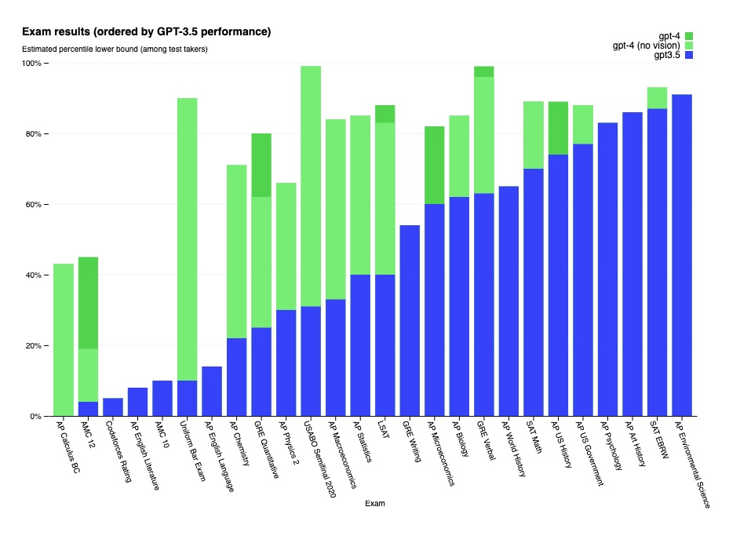

- Michal Kovacik - PL in Software engineering
- Cyril Sadovsky - Senior Software engineer
- We are not ML experts, but we are curious about GPT models and their potential. We are also interested in AI tools and usage in Enterprise.
-
The transformer architecture is a type of neural network architecture that was introduced in 2017 by Vaswani et al. for natural language processing tasks such as machine translation. It is based on the self-attention mechanism, which allows the model to weigh the importance of different parts of the input sequence when computing the representation of each element in the sequence.
- 2017 - Google described the concept of transformers - 65 million parameters
- 2018 - GPT-1 - 110 million parameters
- 2019 - GPT-2 - 1.5B parameters
- 2020 - GPT-3 - 175B parameters
- 2023 - GPT-4 - 1T parameters ??? - not confirmed information
- Successfully transitioning to a world with superintelligence is perhaps the most important—and hopeful, and scary—project in human history. Success is far from guaranteed, and the stakes (boundless downside and boundless upside) will hopefully unite all of us. Sam Altman - OpenAI CEO
- Artificial intelligence (AI) is becoming increasingly important, but scepticism is also spreading: People are not sure whether they should trust companies and their AI products or not. Deutsche Telekom has a responsibility to promote the development of an ethical framework for intelligent technologies. These must follow predefined ethical rules. Deutsche Telekom
- GPT standerdized test results 
-
Where we see potential?
- Enable developers to focus on more complex tasks and improve their productivity by offering quick solutions and reducing time spent on research
- Code review, Marge request
- Scripting and automation of repetitive tasks
- Documentation, comments
- Brainstorming - Board of Timotheus Höttges
- Boosting of creativity YAM Hack Kosice post
- Business analysis
- Potential for improving developers' productivity by offering quick solutions and reducing time spent on research
- Highlight the opportunity for cross-technology learning, as ChatGPT can provide assistance and guidance in areas where developers lack expertise
- Best suited for smaller projects or tasks with limited context, but can be used as a starting point for larger projects
- Can serve as a "Senior Developer" for Junior Developers, provided they know how to work with ChatGPT, enhancing their learning and problem-solving abilities
- More efficient code reviews, reduced technical debt, and faster delivery of high-quality software
- Faster onboarding of new developers, as they can leverage GPT models (not just senior developers) to help them understand the codebase and get up to speed more quickly
| Risk | Possible Mitigation |
|---|---|
|
|
|
|
|
|
|
|
-
How developers interact with both tools:
ChatGPT: developers communicate with ChatGPT in a more conversational manner, asking questions or requesting code snippets
Copilot: developers work with Copilot within their code editor, where it provides suggestions and autocompletes code based on the context -
Capabilities:
ChatGPT: excels in natural language understanding and can provide answers to general questions or coding advice
Copilot: specifically designed for coding tasks, offering more accurate and context-aware code suggestions -
User Experience:
ChatGPT: may require more iterations and context-boosting techniques to obtain desired results
Copilot: often provides more accurate code suggestions with less back-and-forth interaction -
Integrations:
ChatGPT: can be used through the OpenAI API or integrated into various platforms, but not specifically designed for code editor integration
Copilot: seamlessly integrated into Visual Studio Code and other editors through extensions, providing a more native experience for developers
- Link to Copilot statistics
- Link to ChatGPT statistics
- Prompt engineering - new buzzword (who will first write book, will be milonare)
- Use bouth technology as an tool, not act as an console! Copilot - autocompletes GPT models - help with code quality, efficient and reliable delivery What about our product? I can share just my view.